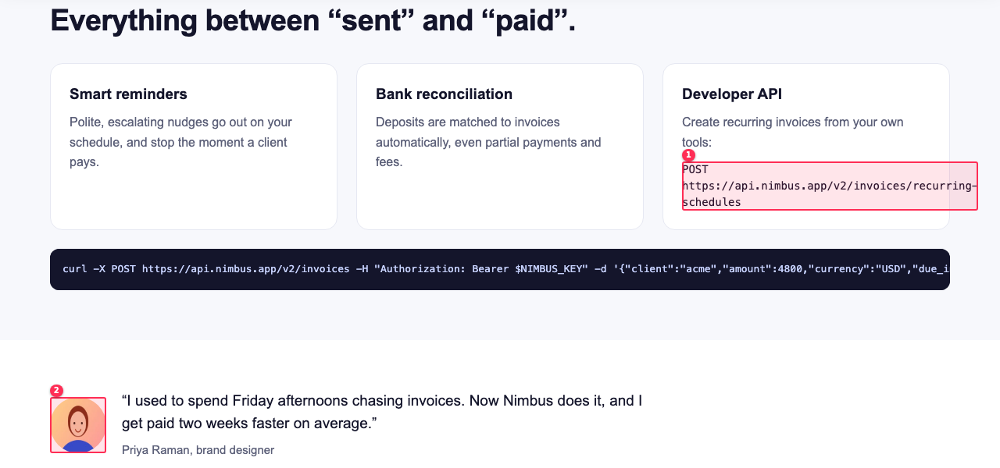
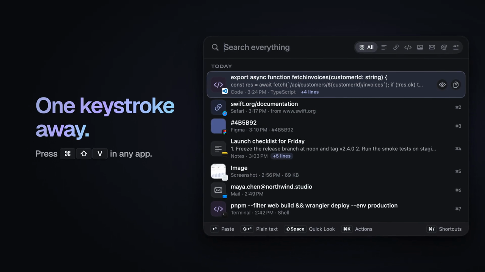

for Claude Code and any agent
Agent skills that
say they're done.
show their work.
Every skill checks its own work.

responsive-qachecking0 errors

a11y-auditchecking0 serious

motion-videochecking−14 LUFS
$ node scan.mjs acme-dashboard Drift score 13% 11 of 83 values EXACT 48 swap in the token NEAR 10 within threshold $ node scan.mjs --fix Fixed 41 values · score 63%
token-driftchecking13% → 63%

pr-visual-diffchecking0px flake

demo-recorderchecking890 KB mp4
Knack
Agent skills that show their work.
npx skills add mayank2424/knackknack.mayankbuilds.com